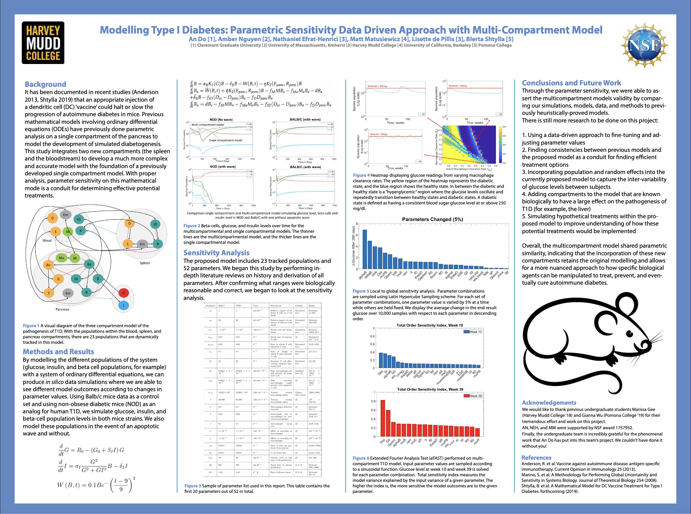
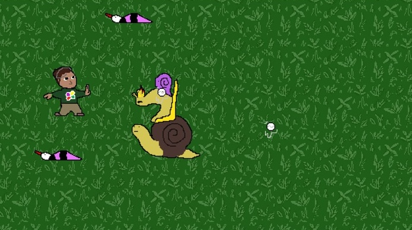

Activities
Describing my work experiences and how they made me want to be a physician in 700 characters or less.
-
February 2024 → Present
ESL Volunteer
Literacy Volunteers of Massachusetts
Every week, I help an immigrant learn to speak, read, and write English. I had a student who lived in America for 3 years, but was not able to speak English. Through the tutoring, he become more involved with the community, where he impressed his Adult Education teachers with his abilities, interviewed for their social media, and even give presentations to the whole school. As these 2-hour sessions were sometimes the only time the student would speak English for the week, I planned lessons ahead of time and researched the most effective study techniques. I enjoyed watching the student progress to be able to formulate sentences faster each session while connecting with them and learning more about their lives and culture.
-
August 2022 → Present
Medical Scribe
Salem Hospital
I directly observed and documented patient encounters within the ED. The position offered me an unparalleled vantage point beyond learning medical patterns and algorithms, extending into mentorship. The physicians were always eager to answer my questions, from their rationale about a patient to how their medical school rotations were structured. From witnessing the adrenaline-fueled high-stakes intubations to calming down distressed patients, I witnessed the full spectrum of healthcare, where humility and compassion were demonstrated and embodied by the doctors I observed, and I strive to reach their level of excellence.

-
November 2022 → Present
Hospice Volunteer
New England Hospice
I provided solace to patients facing their final six months through heartfelt conversations and shared laughter over games. One patient, "Leonne," who was limited to "yes/no" responses, still filled the room with joy when I asked about her hobbies, family, and pets. She'd grip my hands tighter after each goodbye, acknowledging our shared human journey towards life's conclusion - a journey she navigated with dignity and a profound sense of companionship. The privilege of being a part of my patients' final chapters shaped my approach toward medicine; I am committed to making sure every patient feels seen, heard, and valued, at any stage in their journey.
-
January 2022 → April 2023
Volunteer Research Assistant
University of Chicago Margaret Hackett Family Program
I contributed to a literature review concerning the different types of CSF parameters and their effects on the mechanisms and treatments of hydrocephalus. Within the realm of hydrocephalus treatment literature, a recurring cast of authors recycled their datasets in different papers, years apart. The illusion of promising results from my initial data collection quickly diminished upon re-examination of several papers, causing me to re-run code, regenerate graphs, and challenge previously statistically significant results. Research and medicine are filled with messy data, but with the keen eye and critical lens I’ve acquired, I feel prepared to navigate the fog.
-
December 9, 2021 → May 16, 2024
Clinical Research Coordinator II
Massachusetts General Hospital Biostatistics
I worked on the RECOVER project, which aims to understand long COVID; I preserved data integrity within the REDCap database by handling data queries, data entry, and participant-facing coordinator interactions. The data analysts added R to my ever-growing toolbox, teaching me to use a function to reduce 400 lines of redundant code into 15 lines. I contributed to the project's code base by writing some data queries for coordinators to correct, ensuring data quality. This environment of constant learning and innovation shaped my commitment to creating a culture of mentorship and continual growth for medical school and beyond.

-
May 2020 → August 2022
Clinical Laboratory Technologist II
Brigham And Women's Hospital Clinical Microbiology
As a clinical lab technologist in the BWH Clinical Microbiology Lab, my primary duty was performing microbiology assays, including gram stains and blood cultures, on patient samples sent from the OR, ED, inpatient floors, and outpatient clinics. Faced with recurrent questions or mistakes about certain procedures stemming from a lack of documentation or outdated SOPs, I started making flowcharts for the commonly asked issues. This led to reduced communication breakdowns and improved workflows. By taking the initiative, I was able to prioritize efficiency, clarity, and patient safety.
-
September 2019 → March 2020
Volunteer
Boys And Girls Club of Greater Lowell
At the Boys And Girls Club, I tutored children from grades K-8 coming from disadvantaged backgrounds in reading, writing, and math. Every day in September, "Abby" arrived shrouded in gloom and silence, depending on me to decipher all the words and numbers on the homework. Through practice and application, along with our shared love of David Goggin's mantra of "refusing to die," she started acing her assignments. She also started working out at the club gym with the new friends she made. I saw her thrive academically and socially; as a physician, I want to do the same for my patients: champion their health and success, against all odds.
-
May 2019 → August 2019
Summer Research Assistant
REU In Data Science at Harvey Mudd College
During my summer at Harvey Mudd, I upgraded a simplistic mathematical model of Type 1 Diabetes that merely focused on the pancreas to a more complete, complex one that added data on the blood and spleen using MATLAB. My work pioneered a newer, more complete model that included the liver. By tweaking and validating the model, I contributed to new, personalized approaches to the treatment of a complex disease. I am committed to continue using technology not only to treat diseases, but to change the way we think about healing and patient-centered care.
 -
September 2016 → May 2019
Undergraduate Research Assistant
BiNDS Lab at UMass Amherst
I used Python to refine datasets of protein-protein interactions for the glycolysis and oxidative phosphorylation pathways then visualized the data in Cytoscape. My efforts unveiled a distinct lack of organization in glycolysis as opposed to OxPhos. This data served as evidence in a paper suggesting that more severe cancers have a higher Gibbs free energy value due to a reliance on glycolysis for energy. The findings call for novel drug targets against proteins favored by cancer cells while sparing healthy cells. I plan to continue applying computational methods to biology, in order to decipher the complexities of disease and pioneer new paths to medical innovation and healing.
-
September 2017 → May 2019
Undergraduate Research Assistant
Animation Club at UMass Amherst
In response to the Animation Club's dwindling numbers, I stepped up as an officer, transforming it into a hub for both learning and celebrating animation by implementing classes and outings to local exhibitions. Leading 2D animation workshops, I taught animation principles and Adobe Animate, guiding members to bring their unique visions to life on their blank canvas. In revitalizing the club, membership increased from 5 to 30 members, and they left with pieces they are proud to have created and shared, with some even pursuing a minor in animation. With proof that challenging the status quo leads to unprecedented heights, I will continue to carve new paths from the established paths, to enhance patient care.
-
March 2021 → January 2025
Physician Shadowing
Mass General Brigham
Dr. Justin Pathickal, Salem Hospital, 8 hours
Dr. James DiCarlo, BWH, Clinical Pathology, 10 hours
Dr. Weiwei Shi, BWH, Anatomic Pathology, 5 hours
Dr. James Stone, MGH, Autopsy, 6 hours
Dr. Jamie Maguire, BWH, Infectious Disease, 10 hours
Dr. Sanjat Kanjilal, BWH, Infectious Disease, 10 hours
Dr. Clyde Smith, BWH, Internal Medicine, 10 hours
I explored the vast spectrum of medical care, from clean hospital rooms to the formalin-ridden, blood-soaked morgue. When I held the heart of a deceased patient, I faced the weight of what was at stake. To me, medicine is not just about diagnostics and treatments, but a vow to honor every breath and silence with equal reverence, and to stand at the edge of life and death with the knowledge and empathy. -
April 15, 2017
HampHack 2017 Brain and Development Prize
Hampshire College
I worked with a team to create a video game focused on improving mental health by being able to control the player's emotions using a home EEG device. The game dynamically adjusted difficulty based on the brainwaves read by the device, rewarding calmness with ease and agitation with challenge. The panelists, moved by our application, proceeded to award us the Brain And Development Prize at the Hackathon. My team of casual acquaintances evolved into a tight-knit group. Creating a patient-centered product inspired me to pursue medical research. Check out the project!
 -
July 2018 → Present
Skateboarding
Hobbies
As a novice who could barely ollie, I was grateful to find a diverse group of enthusiasts in the skateboarding club who saw my eagerness and welcomed me. Beyond landing new tricks such as bigspins, the excitement over small victories and the community kept me coming back, despite the wrist pain from falling the previous session. Through teamwork, club members landed tricks they never thought were possible. Thanks to the unwavering support from fellow skaters, I still skate to this day and help new skaters at the skatepark, and I wish to continue this spirit of unwavering support by uplifting my patients every step of the way.